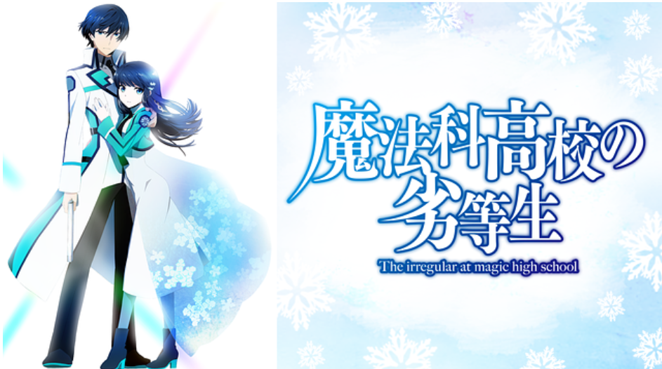
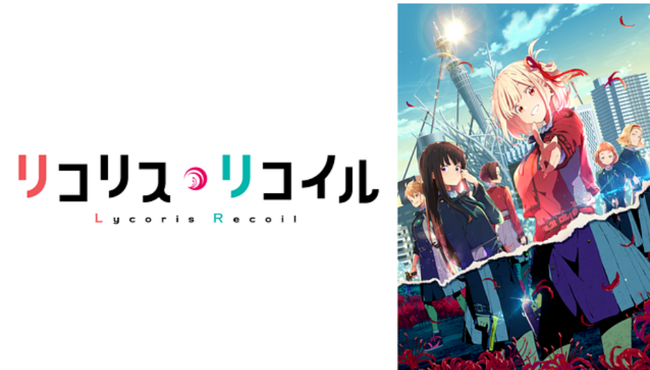
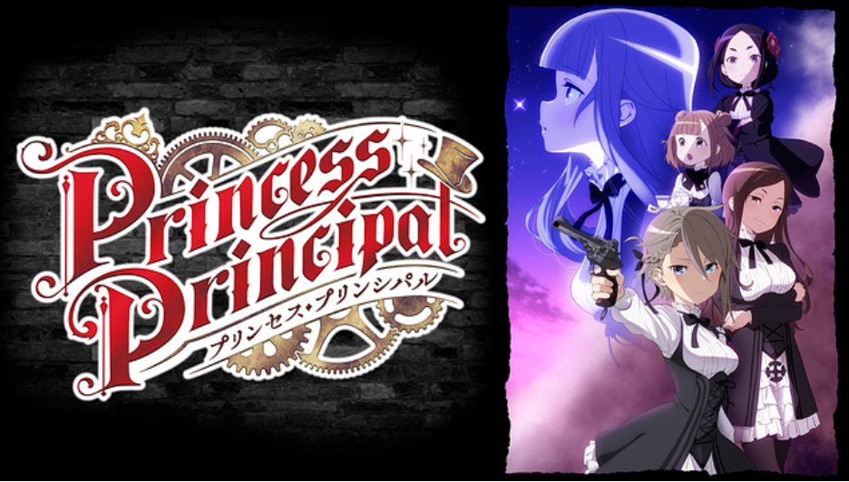
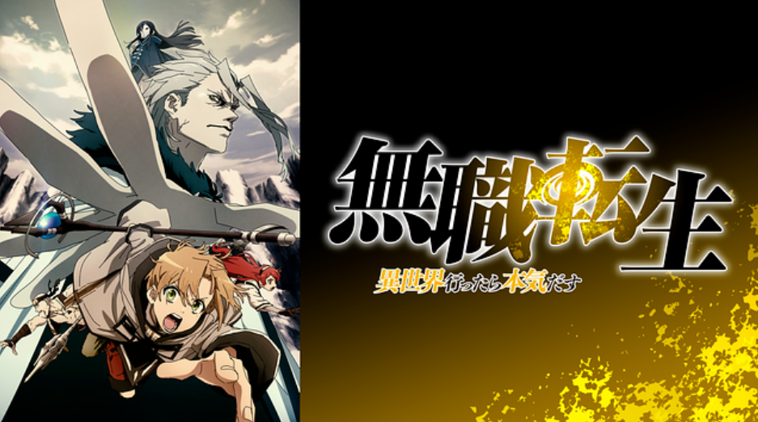
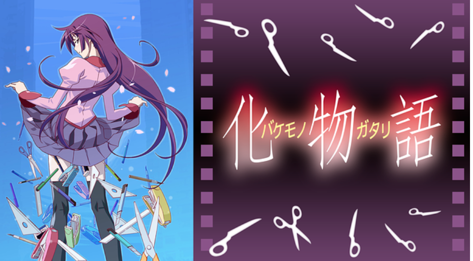

ここでは、主が今まで見てきた作品の中でオススメの作品を5つに絞って紹介します(更新の可能性あり)

魔法科高校の劣等生
「魔法」といえば異世界系作品のようなものをイメージするが、この作品においては「魔法」＝「科学」であり、
今までのイメージを覆した作品でとても興味深い。
主人公が強くヒロインもとても可愛いため、さまざまな目線から
作品を楽しむことができる。
今までたくさんのアニメ作品を見てきたが、この作品を初めて見たときの興奮は今も忘れられない。

リコリス・リコイル
社会現象をも起こしたアニメをあまり見ない人でも名前くらいは聞いたことある作品。戦争も何も起きない平和が
当たり前の日本の首都東京。しかし、そのような平穏な日々には秘密がある。日常系から非日常系の分野に加え百合展開や
戦闘シーンなどアニメとして素晴らしいジャンルをすべてつぎ込まれている。
また、主人公を始め登場人物それぞれの思いや目的が繊細に表現されておりアニメを普段見ないような方でも楽しんで見ることができる。

プリンセス・プリンシパル
2017年の夏アニメとして放送された本作は、「スパイ」×「スチームパンク」×「女子高生」という人気ジャンルを組み合わせた
ジャンルになっている。世界観は、アニメの中に入ってもらうために日本ではなく架空の英国を舞台にした。
東西が分裂したロンドンということでマニアックな舞台設定から視聴者に興味を持たせている。
ファンタジー要素として、魔法ではなく魔法の代替えを用意した。事例のない道具を出すことにより、独特な世界観を演出している。

無職転生 ～異世界行ったら本気だす～
なろう系アニメの代表作である本作は、この作品を制作するためにアニメ制作会社が設立されるなど放送前から注目を
浴びていた作品である。原作では、なろうで常にトップを飾っており現在は殿堂入りをしているほどの人気作品である。
主人公は34歳・童貞・無職の引きこもりニート男であったが命を落とし剣と魔法の異世界の赤ん坊に転生していた。転生後
本気で生きる主人公を描く「人生やり直し」のファンタジー作品である。登場人物の個性や戦闘シーン、この作品のおいては
opやedをうまいこと活かし他の作品にはない魅力がある。ぜひ見てほしい作品の1つである。

化物語
アニメ化するのが難しいと言われていた作品の代表例が本作である。理由としては、作画の問題状どのようにアニメとして成立させるかが
難しかったからである。そして、本作をきっかけに続編も次々とアニメ化され現在では物語シリーズとしてアニメオタクの中では語られている。
物語シリーズの中で最初にアニメ化された本作はジャンルとしてはあまり人気が出ないホラーサスペンスである。しかし、主人公や登場するヒロイン
の個性や目的、非日常な物語が人気を出している。私はこの作品をきっかけにアニソンという素晴らしいコンテンツに出会うことができた。
登場人物の個性や非日常な物語が絡み合ってとても面白い作品の1つである。